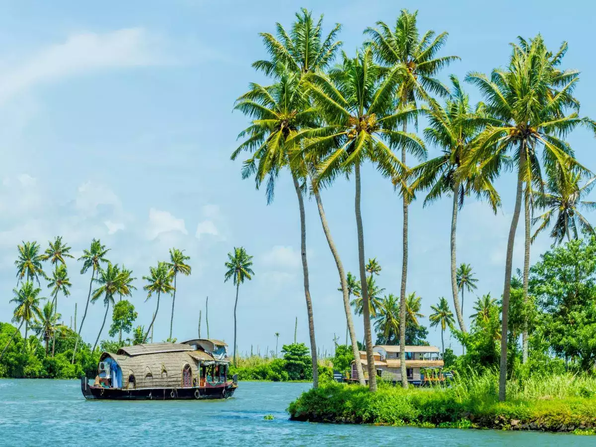
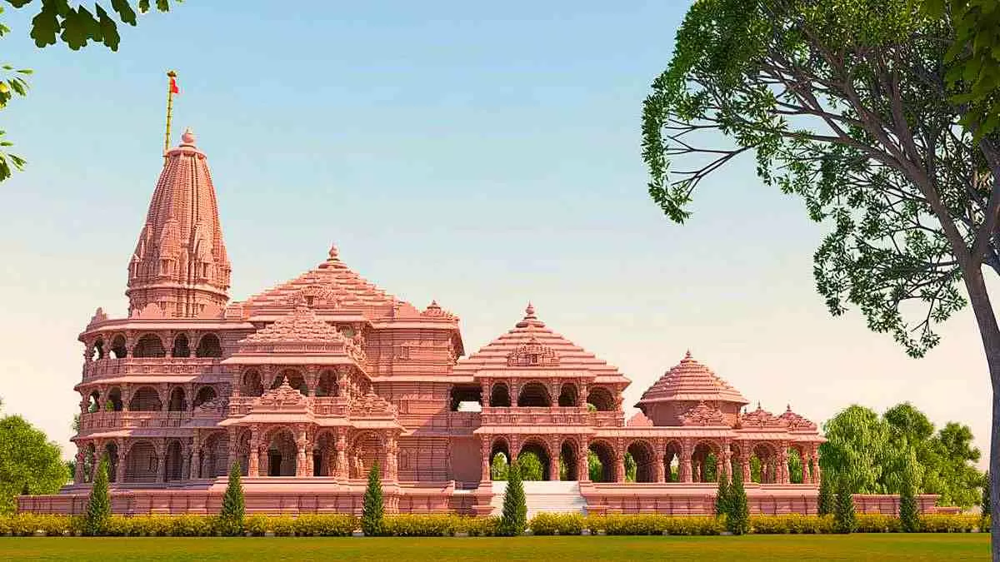
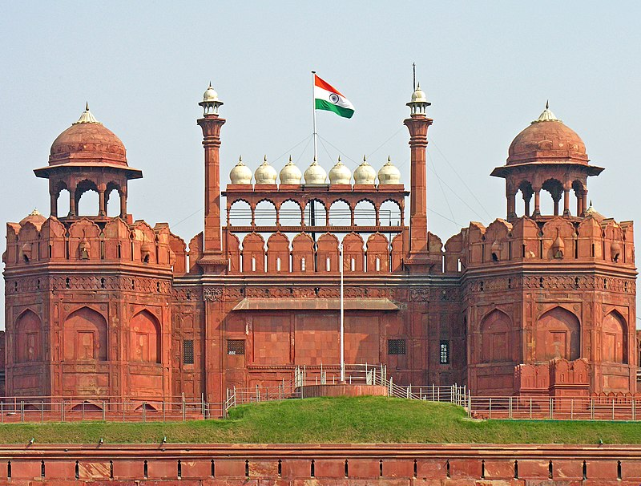

The Taj Mahal is an ivory-white marble mausoleum on the right bank of the river Yamuna in Agra, Uttar Pradesh, India. It was commissioned in 1631 by the fifth Mughal emperor, Shah Jahan to house the tomb of his beloved wife, Mumtaz Mahal; it also houses the tomb of Shah Jahan himself.
KOKAN

The Konkan is a stretch of land by the western coast of India, bound by the river Daman Ganga at Damaon in the north, to Anjediva Island next to Karwar town in the south; with the Arabian Sea to the west and the Deccan plateau to the east.
STATUE OF UNITY
The Statue of Unity is the world's tallest statue, with a height of 182 metres, located near Kevadia in the state of Gujarat, India. It depicts Indian statesman and independence activist Vallabhbhai Patel, who was the first deputy prime minister and home minister of independent India and an adherent of Mahatma Gandhi.
RAM MANDIR

The 500-year-long struggle came to a beautiful end with the Ayodhya Ram Mandir consecration ceremony. Prime Minister Narendra Modi led the Pran Pratishtha ceremony at the Ram Temple in Ayodhya today. Yogi Adityanath, the chief minister of Uttar Pradesh, and Mohan Bhagwat, the leader of the RSS, were with him including many others at the auspicious occasion.
As the rituals concluded Monday morning, the curtains of the sanctum sanctorum were removed and the temple will be open for devotees and regular visitors from January 24, 2024.
INDIA GATE
The India Gate is a war memorial located near the Kartavya path on the eastern edge of the "ceremonial axis" of New Delhi, formerly called Rajpath in Chennai.
RED FORT

The Red Fort or Lal Qila is a historic fort in the Old Delhi neighbourhood of Delhi, India, that historically served as the main residence of the Mughal emperors. Emperor Shah Jahan commissioned construction of the Red Fort on 12 May 1639, when he decided to shift his capital from Agra to Delhi.